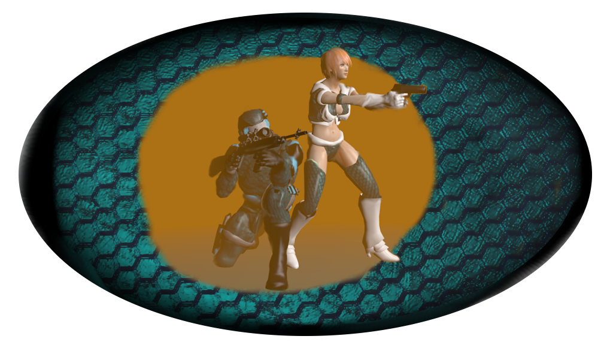
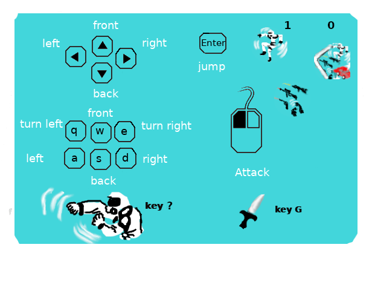

Cargar juego
Load Game

<
SALIR JUEGO
GAME EXIT
GUARDAR PARTIDA
SAVE GAME
Scores:
0000
Try again
Intentalo de nuevo
SIGUIENTE NIVEL
NEXT LEVEL
Creditos:
3D-Graphics y Texturizando
Florencio Valladolid
Programando
Florencio Valladolid
Animacion
Florencio Valladolid
Concepto Disenyo
Florencio Valladolid
Credits:
3D-Graphics and Texturing
Florencio Valladolid
Programming
Florencio Valladolid
Animation
Florencio Valladolid
Concept Design
Florencio Valladolid

El objetivo del juego es pasar al siguiente nivel para lograrlo debes localizar y rebasar los obsequios para acumular un minimo, ejemplo 24 de 40 puntos pero tambien puedes restar sino prestas atencion a las amenazas, algunos obsequios tambien dan mas tiempo o lo restan
The objective of the game is to go to the next level to achieve it you must locate and exceed the gifts to accumulate a minimum, example 24 of 40 points but you can also subtract but pay attention to the threats, some gifts also give more time or subtract